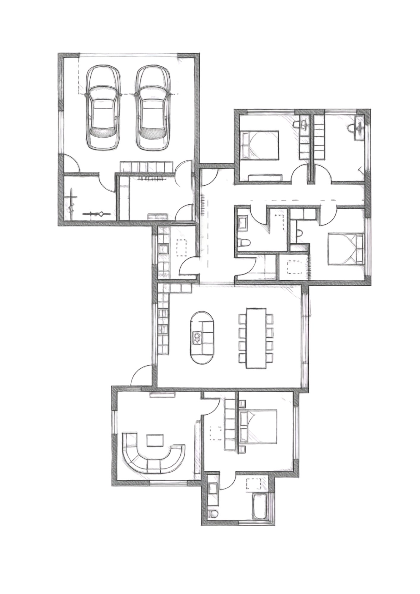
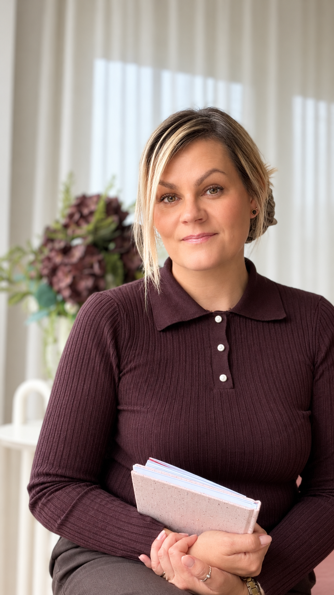
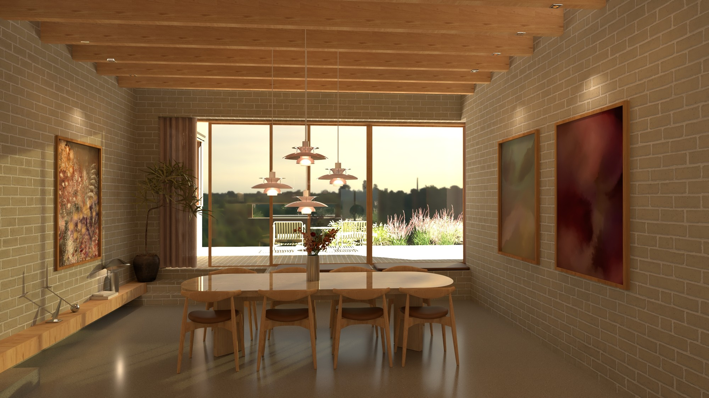
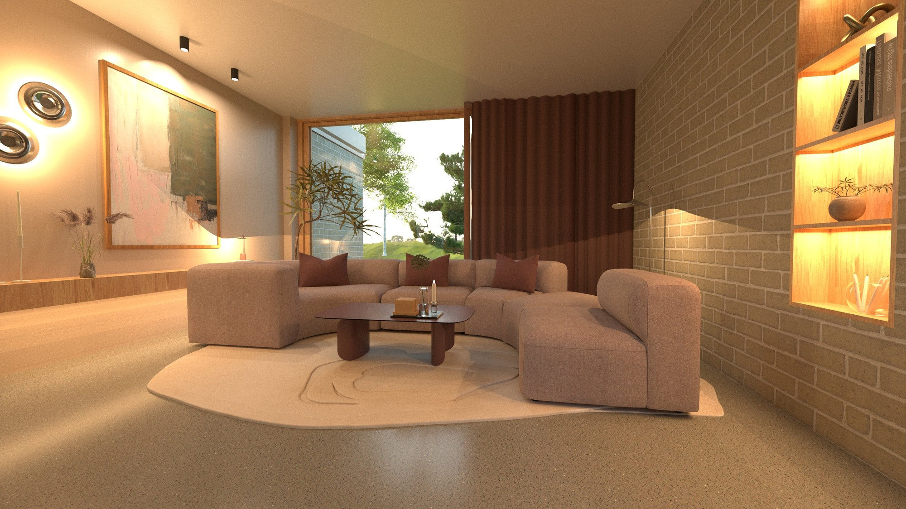
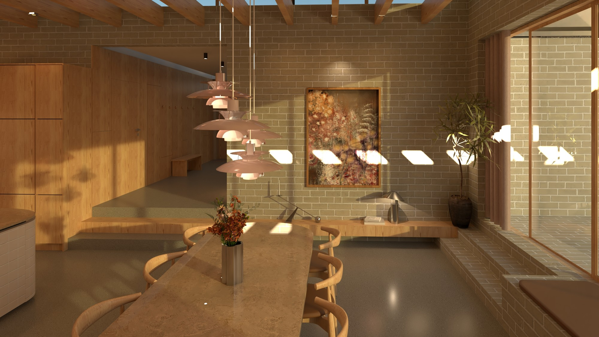
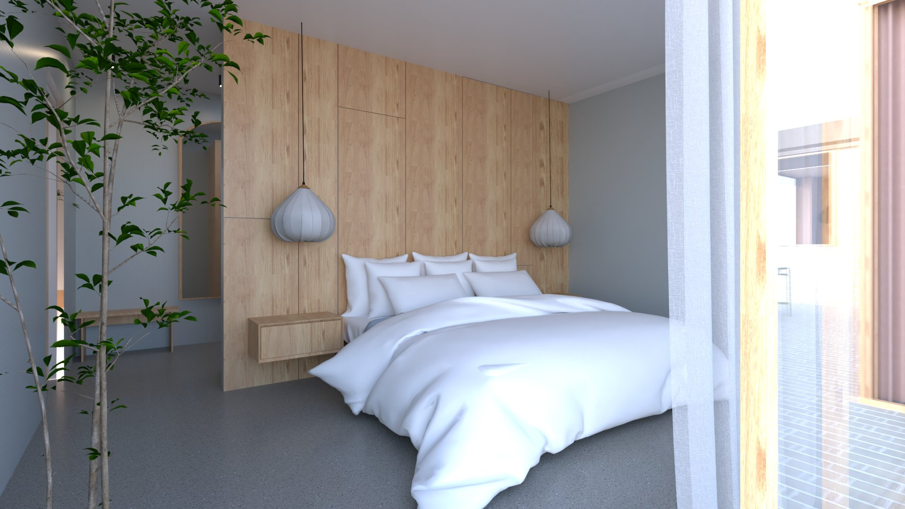
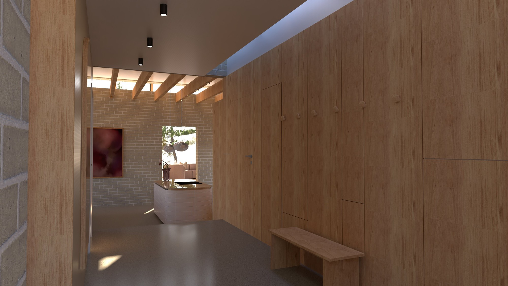
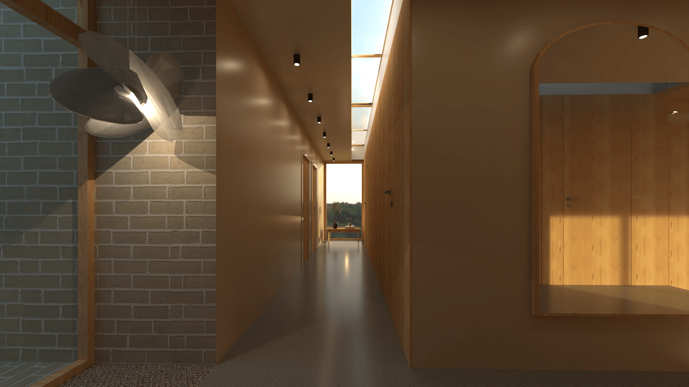
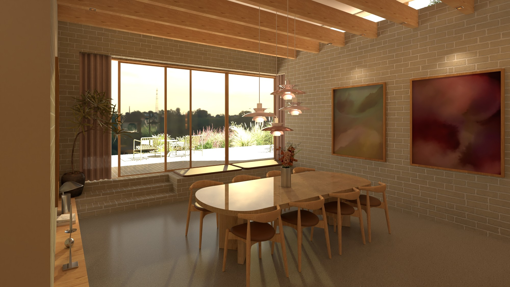
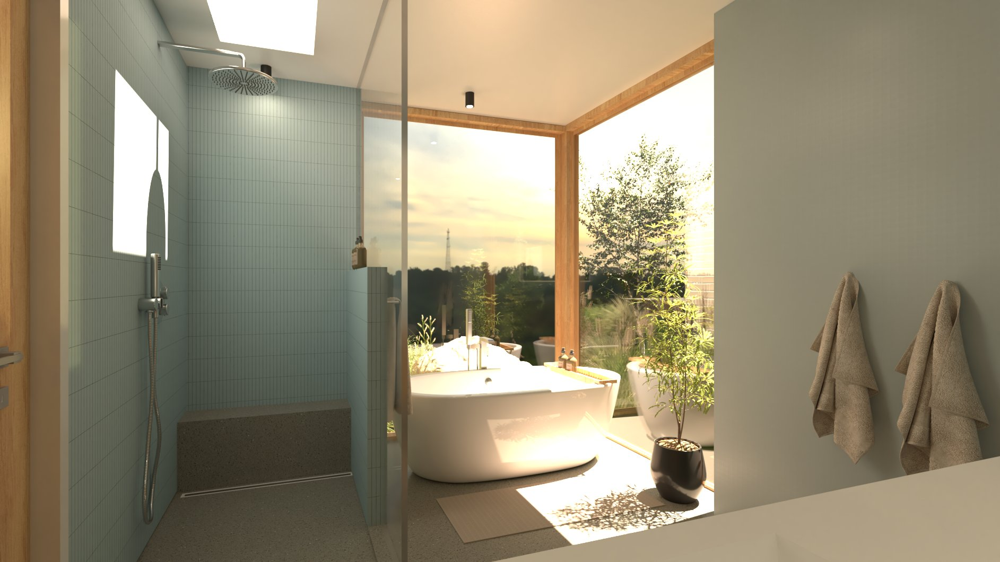

01
Indretnings- og renoveringsrådgivning
Med rådgivning afklarer vi sammen dine behov, og hvad jeg vil levere for at transformere dit rum.
Indretningsarkitekt nær Aalborg
View by Mia skaber gennemtænkte, funktionelle og tidløse interiørløsninger, skræddersyet til din vision. Med udgangspunkt i dit liv og dine behov vækker jeg rum til live gennem skandinaviske design- og æstetiske normer.

Nybyg, funkis
„I en verden, der konstant forandrer sig, har vi brug for tryghed og balance.“
Jeg skaber designløsninger, der passer til både private hjem og erhverv. Store som små, og tager udgangspunkt i dit liv og dine behov nu, men også i mange år frem.

Mød mig
Indehaver & indretningsarkitekt
Som indretningsarkitekt brænder jeg for at skabe rum, hvor æstetik og funktion smelter sammen. Min største styrke er evnen til altid at se helheden i et projekt. Jeg zoomer ind på detaljen, men indretter altid med øje for de store linjer, rummelige sammenhænge og strategiske views, der skaber visuel ro og balance.
Min kreative proces er dybt forankret i naturen. Jeg bruger naturens elementer, dens lys, farver og taktile materialer, som en aktiv medspiller i mine designs. Ved at bringe det organiske indenfor skaber jeg atmosfæriske og harmoniske rum, der ikke bare skal ses, men mærkes.
Jeg tager udgangspunkt i dit liv og dine behov nu, men også i mange år frem. Sammen kan vi skabe dit drømmehjem.
Hvad jeg tilbyder
01
Med rådgivning afklarer vi sammen dine behov, og hvad jeg vil levere for at transformere dit rum.
02
Jeg leverer specialistekspertise, herunder designkoncepter, specifikationer og tekniske tegninger.
03
Jeg mener, at indretningsdesign bør være tilgængeligt for alle, uanset budget.
04
Jeg giver dig digitale visualiseringer af dit rum, så du er fuldstændig tilfreds med designet, inden det føres ud i livet.
Projektportfolio
Fra helt nye plantegninger til enkeltstående rum: hvert projekt starter med dine ønsker og ender med en løsning, der fungerer i hverdagen.
En helt ny plantegning til en familie med helt specifikke ønsker: Funkis, der skiller sig ud. Naturen trækkes med ind i rummene, og udsigten udnyttes optimalt.
Se projektet







Hvor skal dit vasketøj hænge, og er der plads til opbevaring i dit bryggers? Projektet viser et bryggers, hvor vask, tørring og opbevaring er samlet i én gennemtænkt løsning med fast plads til alt det praktiske.
Se projektetBørneværelset har forskellige funktioner og krav, alt efter alder. Skal der være tid til fordybelse og leg, eller skal der skabes et gamerværelse? Tre børneværelser viser, hvordan samme grundprincipper tilpasses en pige på 3 år, en dreng på 8 år og en pige på 17 år.
Se projektetHvilke krav om materiale stiller et erhvervslokale? Skal der være adgang til toilet? Hvordan håndteres kemikalieaffald og dampe? Salon Éclat er indrettet som en frisørsalon, hvor drift, materialer og en rolig kundeoplevelse hænger sammen. En afklaret plan viser, hvor modtagelse, reseption, vaskepladser og opbevaring af kemikalieaffald får plads.
Se projektetEn studiebolig kan indrettes bæredygtigt og funktionelt på trods af få kvadratmeter, med specialbyggede møbler og møbler med flere funktioner. Hvert hjørne er udnyttet, uden at boligen føles trang.
Se projektetEt aflangt rum med mange vinduer kræver den helt rette indretning. Udnyt viewet og luk lyset ind. Stuen er indrettet med zoner til ophold, arbejde og læsning, så det store vinduesparti bliver rummets naturlige midtpunkt.
Se projektetEt køkken, der forener klassisk herskabelig stil med moderne funktionalitet og god kommodegang. Farvelys, paneler og klassiske detaljer er kombineret med et arbejdsflow, der fungerer i en travl hverdag.
Se projektetKomplet indretningsplan fra original plantegning til ny plantegning, møbleringsplan og 3D-visualisering. Originalens skæve rum og døde hjørner er løst med en ny plan, hvor møbleringen følger dagslyset og familiens vaner.
Se projektetSådan arbejder jeg
1
Efter booking kontakter jeg dig, og vi tager en kort snak om dine forventninger og ønsker. Jeg sender dig et kundeskema, som du kan udfylde og returnere til mig.
2
Ud fra vores snak og dit skema laver jeg brainstorming og forberedelse til vores første møde.
3
Jeg møder dig og ser rummene, der skal forvandles. Jeg laver opmålinger, og vi taler ønsker, drømme og budget for projektet.
4
Jeg laver moodboards med farvevalg og stilart. Rummene tegnes op i de ønskede formater.
5
Inden vores andet møde, hvor projektet præsenteres, har jeg holdt løbende kontakt. Projektet præsenteres, og vi kan sammen justere for at nå det ønskede mål.
6
Projektet færdiggøres, og alt efter opgavens art bliver den nu fuldført og afsluttet.
Priser
Det skal være trygt og overskueligt at investere i sit hjem. Herunder finder du mine faste indretningspakker og tillægsydelser, som er skabt til at give dig maksimal værdi og professionel sparring – uanset om du mangler den røde tråd i stuen eller står over for en totalrenovering. Priserne er gennemskuelige og altid angivet inklusiv moms.
Er du i tvivl om, hvilken løsning der matcher dit projekt bedst? Så start med et gratis og uforpligtende kemimøde (15 min.), hvor vi sporer os ind på dine behov.
Book dit gratis møde i formularen herunder.
Alle priser er inkl. moms.
Indretningskonsultation
2.899 kr.
Perfekt til dig, der mangler inspiration, sparring og konkrete idéer, men gerne selv vil stå for udførelsen.
Det får du
Hvad kan du forvente
Vi har 90 minutter sammen og vil typisk kunne nå at gå i dybden med op til 3 rum. Hvor meget vi når, afhænger af rummene, de udfordringer, du ønsker hjælp til, og de spørgsmål du har.
Jeg tager udgangspunkt i din eksisterende indretning og ser på, hvilke små eller større ændringer, der kan gøre en forskel. Undervejs får du mine konkrete råd, idéer og anbefalinger, og du har selvfølgelig mulighed for at stille spørgsmål.
Du er velkommen til at tage noter, så du efterfølgende kan vende tilbage til mine råd og anbefalinger.
Forberedelse
Inden vores møde, sender du plantegning af boligen og gerne billeder af de rum, du ønsker hjælp til. Du må også meget gerne kort beskrive, hvad du især mangler hjælp til. På den måde kan jeg forberede mig og bruge vores tid sammen bedst muligt.
Mest populær
Den komplette rumplan
5.499 kr.
Til dig, der ønsker en konkret, visuel plan og en klar indkøbsliste til ét eller flere specifikke rum.
Det får du
Forberedelse
Inden vores møde, sender du plantegning af boligen og gerne billeder af de rum, du ønsker hjælp til. Du må også meget gerne kort beskrive, hvad du især mangler hjælp til. På den måde kan jeg forberede mig og bruge vores tid sammen bedst muligt.
Efter besøget
Efter besøget arbejder jeg videre med indretningen, og du modtager (efter aftalt tid) din skriftlige indretningsgennemgang.
Den komplette transformation
Fra 7.599 kr. pr. rum
Perfekt til dig, der ønsker at se dine drømme vakt til live i 3D, og som vil have en gennemført rød tråd i boligens primære opholdsrum (op til 3 rum, f.eks. stue, køkken/alrum og entré).
Det får du
Pris: 19.500 kr. inkl. moms (eller 7.599 kr. pr. rum)
Den store totalløsning
Fra 32.000 kr.
Perfekt til dig, der står overfor en større forandring (4-6 rum, herunder f.eks. badeværelser og værelser) og ønsker en komplet indretningsplan med fuld visuel tryghed.
Det får du
Pris: Fra 32.000 kr. inkl. moms (alt efter boligens størrelse og opgavens omfang)
Priserne er inklusiv moms.
Jeg kører med glæde ud og besøger dig i dit hjem. Kørsel inden for de første 20 kørte kilometer fra min erhvervsadresse er altid fuldt inkluderet i pakkeprisen.
Ved kørsel ud over denne radius pålægges et transporttillæg, som afregnes efter statens officielle takster for erhvervsmæssig kørsel (i øjeblikket 3,83 kr. pr. kørt kilometer tur/retur for de overskydende kilometer) samt eventuelle bro- eller færgeafgifter. Eventuelle kørselsudgifter vil altid fremgå tydeligt af dit endelige tilbud, inden vi går i gang.
Kontakt
Uanset om du vil ombygge et enkelt rum eller udvikle et helt område helt fra bunden, vil jeg meget gerne høre fra dig. Med base nær Aalborg arbejder jeg med kunder både lokalt og nationalt.